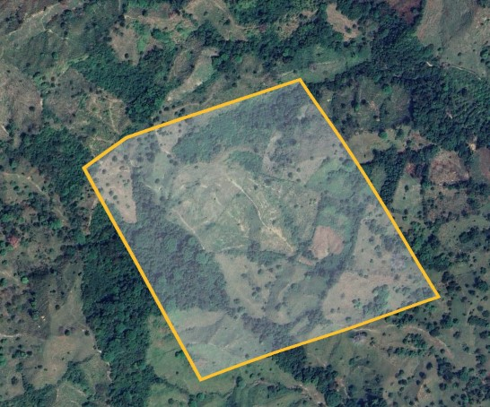
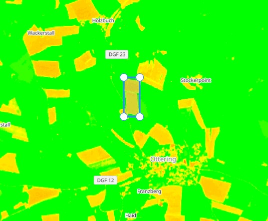
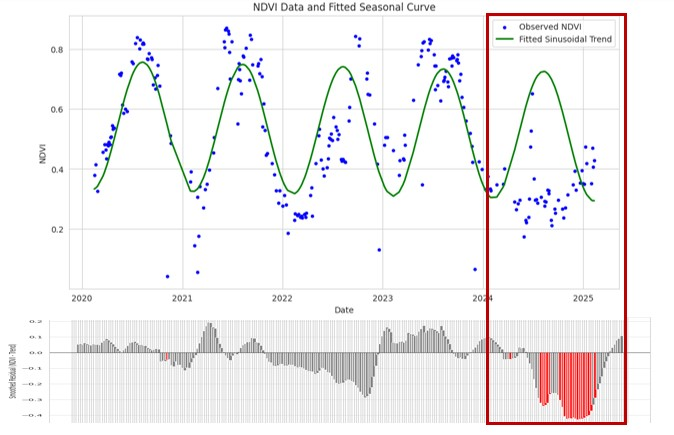

The site was a forest until conversion in 2018. It currently looks like agricultural land.

I accessed Sentinel-2 data and applied a vegetation index. The photosynthetic activity is lower than expected. Should I inspect for an anomaly?

There is a significant departure from previous seasonal trends. It appears that bare soil is exposed, indicating a harvest or crop rotation.